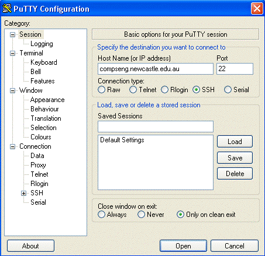

COMP1050/COMP6050 - Laboratory 1
The objectives of this lab are:
- to use the student UNIX servers to setup your own Web site;
Task 1 - Connecting to a UNIX Server
While you will be sitting at a Microsoft Windows PC during laboratories for this course,
the files you are creating (on U-drive) are hosted by a UNIX file server.
This file server can also be accessed from a variety of UNIX systems run by the
School of Electrical Engineering and Computer Science,
as well as the PC labs run by the
Faculty of Engineering and Built Environment.
In particular, the computer for student use is called
flame or compseng.
There are several ways in which you will be able to access the UNIX system compseng. You can use FTP via a program such as
WinSCP or FileZilla.
Using Telnet
Telnet is not secure - it sends all commands and all output
as plain-text across the Internet. Therefore, you will have to use a "secure" telnet application,
such as ssh, also known as putty (see below) to
connect to compseng.
Once connected, ssh functions
exactly as telnet does.
Putty ssh
- To start Putty, access the
menu, then select ,
(or correct version number).
- In the Host Name (or IP address) field enter compseng.newcastle.edu.au
and click open

- If you get a window warning about the server's host key not being cached properly, click yes
to say that you trust the host. This window should only pop up the first time you use putty on the system.
- You should now see the a login prompt. If there is anything that is not clear to you,
ask your demonstrator for help.
Logging In to compseng
- Your username on the UNIX systems is simply your student number with a
lowercase 'c' at the start. For example, c3012345
- You will then be prompted for a password. Use your normal login password. If this is your first time logging in, then your initial password made by combining
the 4 letter code on your student card with your birth date and month.
- Note that the computer will not "echo" your password as you type it - it may not even display
a line of asterisks.
- Do not panic if you get your password wrong. You usually get three attempts before the UNIX server
will break the connection. If this happens, then you can just reopen the connection and try again.
If your password fails several times, then ask your demonstrator for help.
Task 2 - Familiarize yourself with UNIX File Commands
The following example will show you how to move around your files on the UNIX system
(these are the files you see in the U-drive from a Microsoft Windows PC).
- The directory structure of a UNIX system (that is, the organisation of its files) is like a tree.
When you login, you are automatically placed at a particular branch in the tree called your "home" directory.
Everyone with an account on this machine has a branch to himself or herself.
You can put things onto your own branch but you need permission to put or get stuff from other people's branches or even further down the tree.
If you want to see where you are in the overall tree, type pwd.
As you will see, you are far up the tree - each / represents a branch on a branch.
- From your home directory, you should create three or four directories, which are new branches off the branch you own.
Directories should have names that reflect the content of the files you plan to hang from them.
For example, lecture_notes, assignments, downloads,
images, etc.
The command to create a directory is mkdir dirname
(where dirname is the name to give to the new directory).
- Once you have created a few directories you should list all the files and directories you have on the current branch.
The command to list the files and directories is ls. This just gives a simple list of names.
To get more information, type the command ls -l (NOTE: this is 'dash l' not 'minus 1').
- You can move around the tree quite easily. To move up to one of the new branches you have created, type cd dirname.
Once you have moved you can type pwd command again to see where you are,
or ls -l to see what files and directories are hanging from this branch (if you just created the branch then it should contain nothing).
- There are two "special" versions of the cd command. Typing cd .. takes you back down the tree one level,
to the branch below the one you are currently in. Typing cd ~ takes you back to your home directory, no matter where you
currently are.
- The cd command even lets you chain directories together, separating them with a /.
For example, if you are in a directory called testfiles and you type
cd ../testfiles/../testfiles - what does this do? Type pwd to see where you are.
Do you understand what happened? If you do, great - if you don't ask a demonstrator.
Understanding how to move around the tree is very important.
- You can delete a directory you have created (provided it contains no files), by positioning yourself in the directory immediately
below and typing rmdir dirname.
- You can copy files (but not directories) using the command cp existingfiilename newfilename.
For example, cp notes.txt mynotes.txt will make a copy of the file notes
and call it mynotes. Try it on one of your own files.
After typing the command, you should have two files - use ls -l to see.
- You can move (rename) files (and directories) with the command mv existingfiilename newfilename.
For example, mv mynotes.txt morenotes.txt changes the name of the file, but you still only have one file.
Try this, and use ls -l to see the result.
- You can also use the mv command to move a file into a completely different directory.
For example, mv mynotes.txt notes/ moves the file into the notes directory under the current
directory (assuming the notes directory exists), while
mv mynotes.txt ../morenotes.txt moves the file into the parent directory and changes the name of the file.
- You can delete (remove) a (non-directory) file (such as one you created with your plain-text editor) by typing rm filename.
Be careful not to delete files starting with a dot "." - these are UNIX system files, and
deleting them may stop your account from working.
- Note that once you remove these files they are gone, and it is very difficult to get them back.
The files are really deleted, not just moved into a "trash can". There is no "undelete" or "restore" command on our UNIX servers.
- Well, almost. These days you can manually recover files from the last weeks' worth of daily backups.
You can find these backup files in the directory
OnlBak which is under your home directory.
Inside OnlBak you will find a subdirectory
for each day of the week - these contain your daily "incremental"
backups (only those files which changed that day are stored).
In addition, the subdirectory Full
contains a weekly backup of your entire U-drive.
- Get help: Need to know more about any command use man command_name
Task 3 - The UNIX Web Server and File Permissions
As well as being a UNIX server for students to use, compseng acts as a Web server
on which students can place documents to be accessed by others.
- All files that you want accessible via compseng's Web server must be placed in a special directory,
immediately under your home directory, called public_html.
This directory probably may already exist, but if it does not, then you will have to create it using the mkdir command as follows.
- Note: This step is only for people without an existing public_html directory. Make sure you are in your home directory (cd ~). Type mkdir public_html, be sure to use all lower case, and press enter.
Now ls to check that the directory has been correctly added. You will now need to change the permissions on this directory and your account so that the
you can view the files stored. Type chmod 755 public_html. Now type cd .. to move up a directory. Type chmod 711 cXXXXXXX
, where XXXXXXX should be replaced by your student number. To get back into your home directory type cd ~. Now you can move onto the next step,
what you just did should become clearer once you understand permissions.
- To test this, copy a file into your public_html directory, or make a new file there.
You can then access this file using your Web browser with the URL
http://compseng.newcastle.edu.au/~cXXXXXXX/index.html -
where XXXXXXX should be replaced by your student number, and index.html replaced with the name of your file.
- You probably got a response like Page Not Found or You Don't Have Permission to Access This File.
This is because, while you have permission to access this file, the Web server program does not.
To fix this, you need to change the permissions on your file so it is "readable" by the Web server,
and change the permissions on public_html and your home directory so they are "executable" by the Web server.
- To see the current permissions of your file, change into the public_html
directory and type ls -l - the permissions of each file are shown in the left-most column.
- The permissions consist of 10 characters.
- The first character denotes the type of the file. A directory has a d as the first letter. A "regular" file (like the ones you have created) have a -. Other types of files exist, but you will not need to know about them for COMP1050.
- The remaining 9 characters break down into 3 groups: permissions for you, permissions for your group, and permissions for everyone else.
- Each group consists of 3 characters: permission to Read, permission to Write, and permission to eXecute the file.
If the corresponding letter (r, w or x) appears,
then the corresponding permission is granted. If the character - appears, then that permission is denied.
- You can change the permission on any file you own. In general, you "own" your home directory, plus any files that you create under it. To change the permissions of a file, type the command chmod XXX filename where XXX are the permissions you are going to set.
- The three Xs are (in order) the permissions for yourself, your group, and everyone else.
- Each X is a number from 0-7. You derive the number by taking the binary string of permissions, where 1 means "permission granted" and 0 means "permission denied", and converting it to a decimal number.
- For example, a file that is readable by you only, and writeable and executable by no one, has the permissions string r-------- = 100:000:000 (base 2) = 4:0:0 (base 10) - hence, the command to set these permissions is chmod 400 filename. Can you see what the command would be to set the permissions of a file so that you, your group, and everyone could read it and execute it, but only you could write to it?
| You | Group | World |
|---|
| R | W | X | R | W | X | R | W | X |
|---|
| 1 | 0 | 0 | 0 | 0 | 0 | 0 | 0 | 0 |
| 1 | 1 | 1 | 1 | 0 | 1 | 1 | 0 | 1 |
- An alternative way to change permissions is as follows. Using the same principles outlined above,
but using characters rather than numbers in the chmod command. By using a combination of the symbols [ugo]{+|-|}[rwx].
For example, if I want to change the first permission shown above to the second, I would use the command
chmod go+rx filename, followed by chmod u+wx filename. To remove a permission, you use the minus sign, rather than a plus sign.
- The Web server is part of the permission group for "everyone else". So,
you need to change the permissions on index.html so that you can read, write and execute the file, while the group and everyone else can only read it.
Similarly, you need to change the permissions on public_html and your home directory so that you can read, write and execute them, while the group and everyone else can only execute them
(a directory must be executable for the files it contains to be accessible).
- Unfortunately you cannot see the changes to permissions on this system, however they do work. And you should know them.
- Once you have updated these permissions, try reloading http://compseng.newcastle.edu.au/~cXXXXXXX/index.html into your Web browser.
All going well, the Web page should now appear.
Note:
any files placed in public_html with the permissions above can be accessed from within the University by
anyone with a Web browser, and depending on your account setup, by anyone on the web. You should not place any files in public_html
that you wish to keep private. In particular, do not place assignment solutions in your
public_html directory! If you do, and another student copies the files,
then you will be liable for the same penalties as if you had given them a copy of your work.
This optional task is targeted at students who want to learn how to transfer data to and from the Unix server.
Steps to follow:
- Download the FileZilla Client. Double click the downloaded file and follow the instructions to install the program.
- Open FileZilla from Start Menu
- Go to the File > Site Manager menu, click New Site. Type in Compseng as the new site name. Type compseng.newcastle.edu.au as the Host. Type 22 as the Port.
Select the SFTP - SSH File Transfer Protocol as the Protocol. Choose Normal as the Logon Type. Type in your username and password and click connect. Next time you can select Compseng from the
Site Manager icon to initiate a connection to the remote machine. When you are connecting for the first time to any serever (e.g. Compseng), you will be presented with a dialog box asking you to accept the security key. Click OK to accept
- The left-hand pane in FileZilla window represents the file system on your local machine. You can navigate through the directory structure.
- The right-hand pane in FileZilla window represents the file system on the remote machine. You can see your home directory.
- To transfer files between your local machine and the remote machine you can simply drag-and-drop between the two panes. Note: In the remote machine you can put your files under your home directly (or any subdirectory under that) only as you do not have permission to access any other directory.
- Use Windows explorer to create a new directory and Notepad to create a multi-line text file under that directory. Now navigate to that directory in FileZilla window and transfer the text file in your home directory in the remote machine.
- Similarly any file that you create in the remote machine can be downloaded to your local machine by dragging between the panes.
- In Windows and Unix the new-line is represented differently. Therefore any file you transfer from Windows to Unix machine needs to be converted by using the command dos2unix file_name in Unix machine. Similarly any file you want to transfer from Unix to Windows machine needs a conversion using the command sed -i 's/$/\r/' file_name before your transfer.
- Finally, disconnect from FileZilla clicking the disconnect button.
References
- Beginning Linux
- Linux man pages
- Putty Documentation